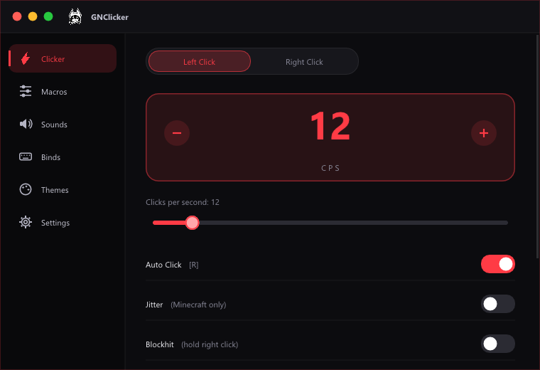

The clean autoclicker
for Minecraft.
GNClicker clicks for you at the speed you choose, with blockhit, jitter, throwpot and W-tap built in. Small, fast and nothing hidden: no network, no persistence, no trace wiping.

An autoclicker that does exactly what it says.
GNClicker is a small Windows program that presses your mouse button for you, over and over, at a speed you choose: from 1 to 100 clicks per second (CPS). Arm it with a hotkey, hold the mouse button, and it clicks for as long as you hold.
It was designed with Minecraft in mind: it understands the hotbar, blocking with a sword, throwing potions and resetting your sprint. But at its core it is a clean, configurable autoclicker that works in any window.
— Gazake, the developer
Four steps, then you just play.
There is nothing to install and nothing to set up beyond picking a key and a speed.
Arm it
Press your hotkey (default R) to arm each side. The status flips from DISABLED to ARMED. Left and right have their own key and CPS.
Hold the button
Hold the mouse button you want to click with. GNClicker reads the physical state of your buttons, so its own clicks never confuse it.
It clicks
Each cycle it holds the button for half the interval, releases, waits the other half, then plays the click sound, with a natural ±20% timing variation.
Stay in control
Let go and it stops instantly. Disarm with the hotkey, or limit it to your game window so it never clicks anywhere else.
Precise timing
A 1 ms system timer keeps the rhythm of clicks and sounds even instead of drifting by ~15 ms like most hobby clickers.
Physical input only
A low-level mouse hook records only the state of the buttons and the scroll wheel, and ignores injected clicks. There is no keyboard hook.
Hotbar-aware
It tracks your selected slot from the number keys and the scroll wheel, and can read your key binds from Minecraft’s options.txt (read-only).
Everything in one small window.
A dark window with a red accent, a sidebar and six pages. No menus to dig through.
Left & right clicker1–100 CPS
Each side has its own hotkey and CPS, with human-like timing variation and an option to act only in your game window. Works in any program, not only Minecraft.
Blockhit
While you hold right click, it releases the block only during the hit and goes back to blocking right after.
Jitter
Tiny mouse movements on every left click, undone on the next one so your aim doesn’t drift. Up to 15 px, and it only works while Minecraft (or a known launcher or client) is the active window.
Slot whitelist
Click only on the hotbar slots you tick. Fetch Binds reads your slot keys from Minecraft.
Throwpot
One key: switch to the potion slot, throw, and (optionally) return to the slot you were on. Delay is configurable.
W-Tap
Releases W for a few milliseconds after a hit to reset your sprint, only while autoclicking or also on manual clicks.
Click sounds
8 built-in sounds (Default, GPro, G303, G502, HP, Microsoft, Old…) plus any .wav you drop in the sounds folder.
Your colors
Free color picker, eight presets and a Rainbow mode. Everything is saved automatically.
Works anywhere
Auto click works in any program or game. Only Jitter is limited to Minecraft, and the app never clicks on its own window.
Hover tips
Rest the mouse on any function name for about 3 seconds and a short explanation appears. Handy when you are not sure what something does.
Hide to tray
The green dot hides the window in the system tray while it keeps working. Click the tray icon to bring it back, or right-click to exit.
Two click modes
Hold the mouse button to click (default), or press once to click non-stop like a classic autoclicker. Found in Settings.
See it before you download it.
The real program, straight from the current version. Pick a page.
Made by a Brazilian.
GNClicker is written and maintained by Gazake, an independent developer from Brazil. It started as a personal project to build a clean, readable autoclicker. The idea was simple: make one that does exactly what it says, and nothing else.
Every feature was written from scratch, and the program only uses standard Windows features. If you speak Portuguese, tap the PT flag at the top of the page to read everything in your language.
Nothing hidden. Here’s the list.
Many autoclickers do things you never asked for. GNClicker was built as the opposite.
What it does NOT do
- Doesn’t touch the memory of other programs
- Doesn’t use the internet: nothing is downloaded or sent
- Doesn’t install itself: no registry entries, no scheduled tasks
- Doesn’t self-delete or run hidden commands
- Doesn’t wipe traces or hide that it was used
What it uses
- mouse_event / SendInput to click and press keys
- GetAsyncKeyState only for the keys you configured
- A mouse hook for button state and scroll only
- PlaySound for the click sound
- The active window’s title and program name, only to detect Minecraft for Jitter
- No keyboard hook at all
Code signing policy
Free code signing provided by SignPath.io, certificate by SignPath Foundation.
- Status: a free certificate is being requested. Until it is granted, releases are not signed, so Windows may show an “unknown publisher” warning.
- Authors, reviewers and approvers: Gazake (sole maintainer).
- Privacy policy: this program will not transfer any information to other networked systems unless specifically requested by the user or the person installing or operating it. In practice, it does not use the network at all.
Free for Windows 10 & 11.
One file, no installer. Version 1.0.1, updated —.
GNClicker.exe
The standard version. Use this one unless Minecraft runs as administrator.
Download 1,3 MB…GNClicker-Admin.exe
Same program, but it asks for administrator rights (UAC). Needed when your game or launcher runs as admin, otherwise Windows ignores the clicks.
Download Admin version…SHA-256 shown above. To check your download, run: certutil -hashfile GNClicker.exe SHA256
Download
Pick the normal version, or Admin if your game runs as administrator.
Open it
If Windows shows the blue SmartScreen warning, click More info → Run anyway. It appears for new programs that aren’t digitally signed.
Pick keys & CPS
On the Clicker tab, click a key button, press the key you want, and set the CPS.
Play
Press the arm key (default R), then hold your mouse button to click.
Questions, answered.
Why did my antivirus warn me?
Autoclickers send clicks on their own, and that whole category is flagged by many antivirus programs regardless of whether there is any malware. GNClicker doesn’t use the network or touch other processes, and the SHA-256 of each file is published above so you can verify what you downloaded.
Which version should I download?
The normal one works in most cases. Choose Admin only if Minecraft (or your launcher) runs as administrator: in that case Windows ignores clicks coming from programs without admin rights.
Can I get banned for using it?
Possibly. Many servers prohibit autoclickers, and options like blockhit, jitter, throwpot and W-tap are easier to detect. Read your server’s rules first and use it at your own risk.
Where are my settings stored?
In %APPDATA%\GNClicker\config.txt. To reset everything, just delete that file.
How do I add my own click sounds?
Create a folder named sounds next to the program and drop .wav files (up to 5 MB) in it. They show up in the sound list on the Config tab.
Does it work on Mac or Linux?
No. GNClicker is a Windows 10/11 program.
Is the program available in English?
Yes. The program starts in English and has a Portuguese option under Settings → Language, just like this website.
Does it only work in Minecraft?
No. The auto click works in any program or game. Only Jitter is limited to Minecraft (and well-known Minecraft launchers and clients), because it is the only feature that moves the mouse.
Can it click without me holding the mouse button?
Yes. Open Settings → Activation mode and choose Press once: the hotkey then starts continuous clicking and pressing it again stops it, like a classic autoclicker.
Is it open source?
Yes. GNClicker is released under the MIT license, the full source code is on GitHub, and the downloads are built there by GitHub Actions.
Is the program digitally signed?
Not yet. A free certificate from the SignPath Foundation is being requested. Until it is granted, Windows SmartScreen may show an “unknown publisher” warning. Check the SHA-256 above, then click More info → Run anyway, or right-click the file → Properties → Unblock.